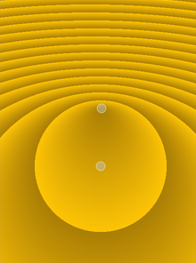

QRadialGradient Class
The QRadialGradient class is used in combination with QBrush to specify a radial gradient brush. More...
| Header: | #include <QRadialGradient> |
| CMake: | find_package(Qt6 REQUIRED COMPONENTS Gui) target_link_libraries(mytarget PRIVATE Qt6::Gui) |
| qmake: | QT += gui |
| Inherits: | QGradient |
- List of all members, including inherited members
- QRadialGradient is part of Painting Classes.
Public Functions
| QRadialGradient() | |
| QRadialGradient(const QPointF ¢er, qreal radius, const QPointF &focalPoint) | |
| QRadialGradient(qreal cx, qreal cy, qreal radius, qreal fx, qreal fy) | |
| QRadialGradient(const QPointF ¢er, qreal radius) | |
| QRadialGradient(qreal cx, qreal cy, qreal radius) | |
| QRadialGradient(const QPointF ¢er, qreal centerRadius, const QPointF &focalPoint, qreal focalRadius) | |
| QRadialGradient(qreal cx, qreal cy, qreal centerRadius, qreal fx, qreal fy, qreal focalRadius) | |
| QPointF | center() const |
| qreal | centerRadius() const |
| QPointF | focalPoint() const |
| qreal | focalRadius() const |
| qreal | radius() const |
| void | setCenter(const QPointF ¢er) |
| void | setCenter(qreal x, qreal y) |
| void | setCenterRadius(qreal radius) |
| void | setFocalPoint(const QPointF &focalPoint) |
| void | setFocalPoint(qreal x, qreal y) |
| void | setFocalRadius(qreal radius) |
| void | setRadius(qreal radius) |
Detailed Description
Qt supports both simple and extended radial gradients.
Simple radial gradients interpolate colors between a focal point and end points on a circle surrounding it. Extended radial gradients interpolate colors between a focal circle and a center circle. Points outside the cone defined by the two circles will be transparent. For simple radial gradients the focal point is adjusted to lie inside the center circle, whereas the focal point can have any position in an extended radial gradient.
Outside the end points the gradient is either padded, reflected or repeated depending on the currently set spread method:
 |  |  |
| PadSpread (default) | ReflectSpread | RepeatSpread |
The colors in a gradient is defined using stop points of the QGradientStop type, i.e. a position and a color. Use the QGradient::setColorAt() or the QGradient::setStops() function to define the stop points. It is the gradient's complete set of stop points that describes how the gradient area should be filled. If no stop points have been specified, a gradient of black at 0 to white at 1 is used.
In addition to the functions inherited from QGradient, the QRadialGradient class provides the center(), focalPoint() and radius() functions returning the gradient's center, focal point and radius respectively.
See also QLinearGradient, QConicalGradient, and The Gradients Example.
Member Function Documentation
QRadialGradient::QRadialGradient()
Constructs a simple radial gradient with the center and focal point at (0, 0) with a radius of 1.
QRadialGradient::QRadialGradient(const QPointF ¢er, qreal radius, const QPointF &focalPoint)
Constructs a simple radial gradient with the given center, radius and focalPoint.
Note: If the given focal point is outside the circle defined by the center point and radius, it will be re-adjusted to lie at a point on the circle where it intersects with the line from center to focalPoint.
See also QGradient::setColorAt() and QGradient::setStops().
QRadialGradient::QRadialGradient(qreal cx, qreal cy, qreal radius, qreal fx, qreal fy)
Constructs a simple radial gradient with the given center (cx, cy), radius and focal point (fx, fy).
Note: If the given focal point is outside the circle defined by the center (cx, cy) and the radius it will be re-adjusted to the intersection between the line from the center to the focal point and the circle.
See also QGradient::setColorAt() and QGradient::setStops().
QRadialGradient::QRadialGradient(const QPointF ¢er, qreal radius)
Constructs a simple radial gradient with the given center, radius and the focal point in the circle center.
See also QGradient::setColorAt() and QGradient::setStops().
QRadialGradient::QRadialGradient(qreal cx, qreal cy, qreal radius)
Constructs a simple radial gradient with the center at (cx, cy) and the specified radius. The focal point lies at the center of the circle.
See also QGradient::setColorAt() and QGradient::setStops().
QRadialGradient::QRadialGradient(const QPointF ¢er, qreal centerRadius, const QPointF &focalPoint, qreal focalRadius)
Constructs an extended radial gradient with the given center, centerRadius, focalPoint, and focalRadius.
QRadialGradient::QRadialGradient(qreal cx, qreal cy, qreal centerRadius, qreal fx, qreal fy, qreal focalRadius)
Constructs an extended radial gradient with the given center (cx, cy), center radius, centerRadius, focal point, (fx, fy), and focal radius focalRadius.
QPointF QRadialGradient::center() const
Returns the center of this radial gradient in logical coordinates.
See also setCenter() and QGradient::stops().
qreal QRadialGradient::centerRadius() const
Returns the center radius of this radial gradient in logical coordinates.
See also setCenterRadius() and QGradient::stops().
QPointF QRadialGradient::focalPoint() const
Returns the focal point of this radial gradient in logical coordinates.
See also setFocalPoint() and QGradient::stops().
qreal QRadialGradient::focalRadius() const
Returns the focal radius of this radial gradient in logical coordinates.
See also setFocalRadius() and QGradient::stops().
qreal QRadialGradient::radius() const
Returns the radius of this radial gradient in logical coordinates.
Equivalent to centerRadius()
See also setRadius() and QGradient::stops().
void QRadialGradient::setCenter(const QPointF ¢er)
Sets the center of this radial gradient in logical coordinates to center.
See also center().
void QRadialGradient::setCenter(qreal x, qreal y)
This is an overloaded function.
Sets the center of this radial gradient in logical coordinates to (x, y).
See also center().
void QRadialGradient::setCenterRadius(qreal radius)
Sets the center radius of this radial gradient in logical coordinates to radius
See also centerRadius().
void QRadialGradient::setFocalPoint(const QPointF &focalPoint)
Sets the focal point of this radial gradient in logical coordinates to focalPoint.
See also focalPoint().
void QRadialGradient::setFocalPoint(qreal x, qreal y)
This is an overloaded function.
Sets the focal point of this radial gradient in logical coordinates to (x, y).
See also focalPoint().
void QRadialGradient::setFocalRadius(qreal radius)
Sets the focal radius of this radial gradient in logical coordinates to radius
See also focalRadius().
void QRadialGradient::setRadius(qreal radius)
Sets the radius of this radial gradient in logical coordinates to radius
Equivalent to setCenterRadius()
See also radius().